Next: Parameters
Up: Dynamic Incoherent Structure Factor
Previous: Dynamic Incoherent Structure Factor
Contents
Theory and implementation
The MSD can be related to the incoherent intermediate scattering function via the cumulant expansion
[49,50]
where  is the number of selected species,
is the number of selected species,  the number of atoms of species I,
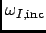 the weight for specie I (see Section 4.2.1 for more details) and
the number of atoms of species I,
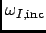 the weight for specie I (see Section 4.2.1 for more details) and
The cumulants
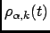 are defined as
| 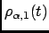 |
 |
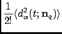 |
(4.169) |
| 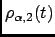 |
|
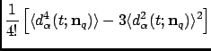 |
(4.170) |
| |
|
|
|
The vector 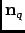 is the unit vector in the direction of . In the Gaussian approximation the above
expansion is truncated after the 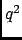-term. For certain model systems like the ideal gas, the harmonic oscillator,
and a particle undergoing Einstein diffusion, this is exact. For these systems the incoherent intermediate scattering
function is completely determined by the MSD.
nMOLDYN allows one to compute the total and partial incoherent intermediate scattering function in the
Gaussian approximation by discretizing equation 4.167:
with for each specie the following expression for the intermediate scattering function:
| 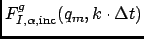 |
|
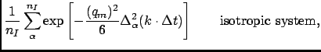 |
(4.172) |
|
|
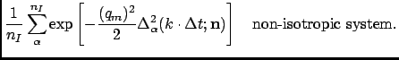 |
(4.173) |
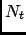 is the total number of time steps in the coordinate time series and 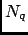 is a user-defined number of q-shells.
The 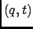-grid is the same as for the calculation of the intermediate incoherent scatering function (see Section 4.2.5.4).
The quantities
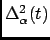 and
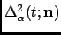 are the mean-square displacements, defined in
Equations (4.16) and (4.17), respectively. They are computed by using the algorithm described in Section
4.2.4.1. nMOLDYN corrects the atomic input trajectories for jumps due to periodic boundary conditions. It should
be noted that the computation of the intermediate scattering function in the Gaussian approximation is much `cheaper' than
the computation of the full intermediate scattering function,
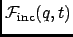, since no averaging over different
q-vectors needs to be performed. It is sufficient to compute a single mean-square displacement per atom.
Next: Parameters
Up: Dynamic Incoherent Structure Factor
Previous: Dynamic Incoherent Structure Factor
Contents
pellegrini eric
2009-10-06